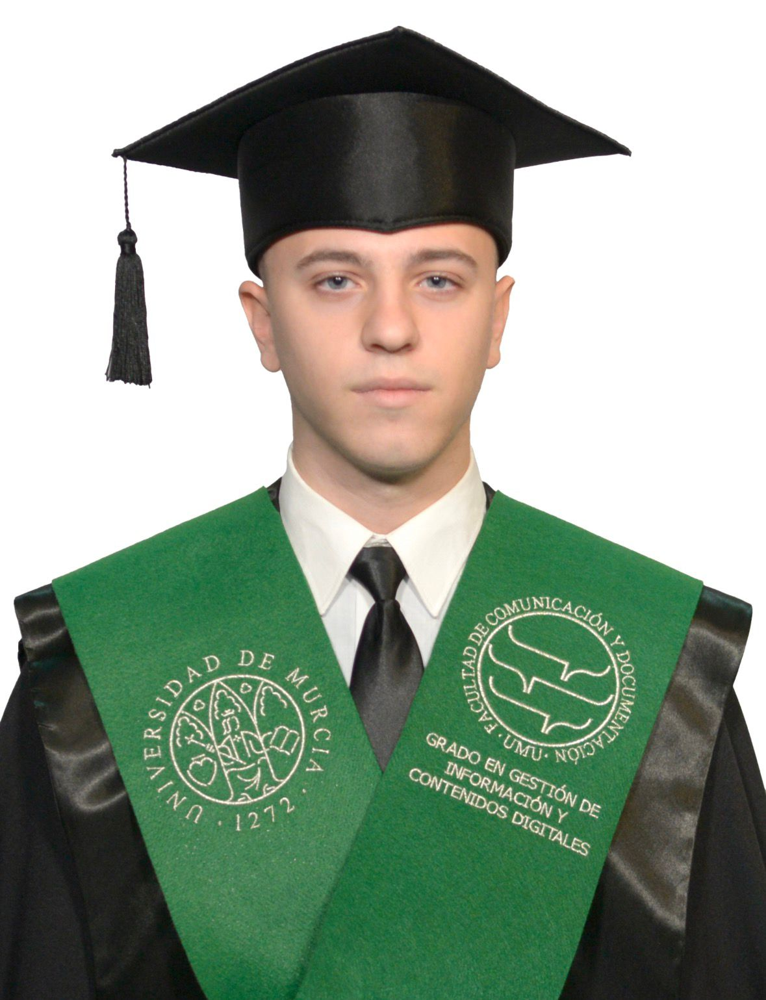

Data Scientist & Analyst — transformando datos crudos en decisiones con Python, SQL y la mirada estratégica del Máster en Data Science por la UCM.

Madrid, 2026. UCM, Máster en Data Science.
Actualmente cursando el último año del Grado en Gestión de Información y Contenidos Digitales — una formación que me ha dado la base para entender cómo se organiza y fluye la información en el entorno digital.
Para llevar estas habilidades al siguiente nivel, completé el certificado de Google Data Analytics y curso simultáneamente el Máster en Data Science en la UCM. Esta combinación me permite unir gestión estratégica con analítica avanzada.
Mi objetivo: usar Python y SQL para transformar datos en bruto en conocimiento accionable y visualizaciones de alto impacto.
Finalizando mi formación en la UCM y abierto a colaborar en proyectos de Data Science, Análisis de Datos e IA.